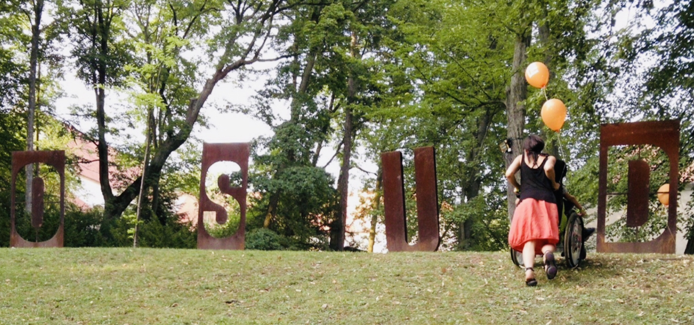
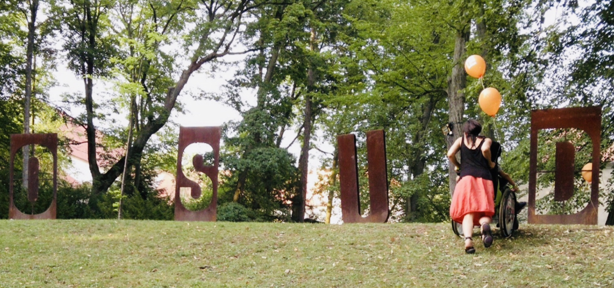

Inspirace
Když je v sázce lidská bytost, tak člověk musí být trpělivý a ochotný se ještě učit, protože stát se může cokoliv. Navíc, když je ve hře ještě láska.
(Tracyho tygr)

Když je v sázce lidská bytost, tak člověk musí být trpělivý a ochotný se ještě učit, protože stát se může cokoliv. Navíc, když je ve hře ještě láska.
(Tracyho tygr)
